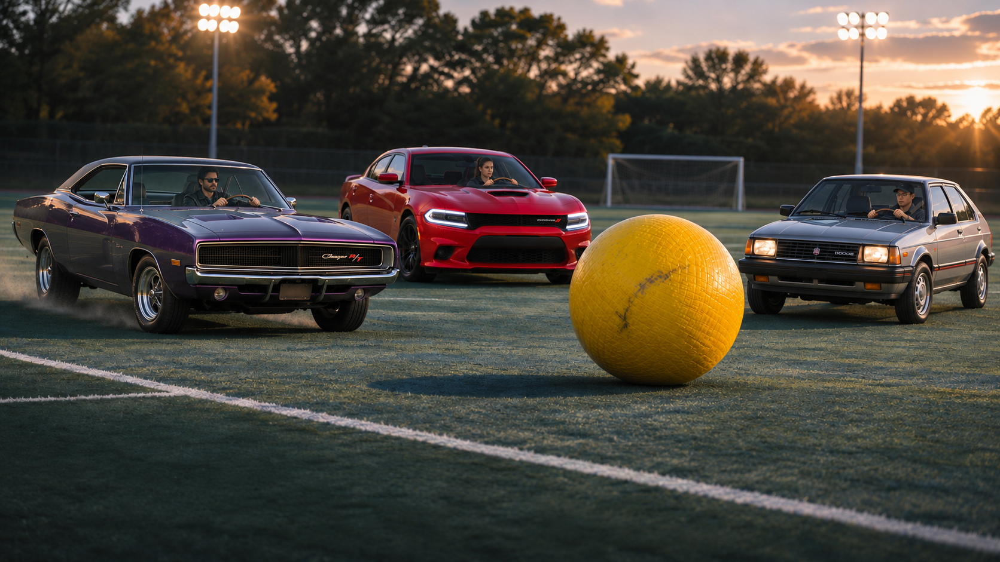

Quarterfinal · Final / Day 2
Cleveland Crankshafts3
Phoenix Powerplays2
Game recap
 Eccentric SportsNews
The Final Eight Edition
Eccentric SportsNews
The Final Eight Edition
 Latest
LatestQuarterfinal · Final / Day 2
Quarterfinal · Final / Day 1
Tournament Progress
6 teams remain 2 of 7 games completedDodge-ball Final EightDay 2 · Quarterfinals
Dodge-ball / Field studyDodge-ball · Quarterfinal Report
A late rebound. A 3–2 win. The Crankshafts advance from a tight quarterfinal against Phoenix.
Read the game reportOpening Quarterfinal
Center-field control powers a 4–2 win over Baltimore.
Read the recapKnow the Game
A 10-foot ball. Five-car teams. Goals spanning the field.
Get to know Dodge-ballTeam to Know
Wide spacing and rapid transitions define the second-ranked Chargers.
Meet the ChargersDay 2 Recap
Cleveland turned a late loose ball into the deciding goal, taking Phoenix 3–2 and a place in the semifinal. The Final Eight continues with six teams still in contention.